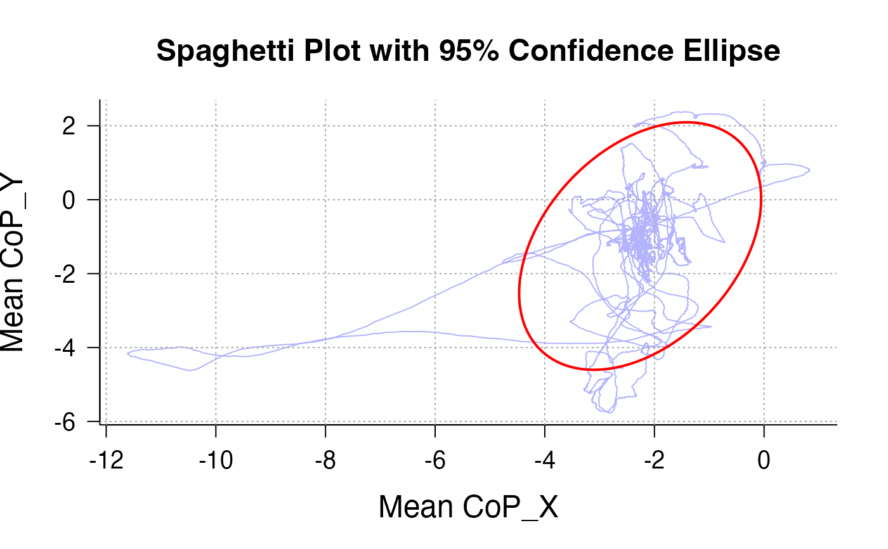

Make a Spaghetti plot and draw an X% confidence ellipse area
Source:R/SpaghettEllipse.R
SpaghettEllipse.RdA function to output a so-called 'spaghetti plot' indicating CoP-X and CoP-Y movements over a specific time period, with a X% confidence ellipse area (default = 95%) over the spaghetti. A 95% confidence ellipse will circle 95% of the data points observed.
Usage
SpaghettEllipse(
df,
participant_id_col = "participant_id",
participant_id = NULL,
time_col = "Time",
time_start = NULL,
time_end = NULL,
copx_col = "CoP_X",
copy_col = "CoP_Y",
Title = "Spaghetti Plot with 95% Confidence Ellipse",
xlab = "Mean CoP_X",
ylab = "Mean CoP_Y",
conf_level = 0.95
)Arguments
- df
a data frame containing the data we want to output
- participant_id_col
a column from the data frame containing participants' unique identifiers
- participant_id
character string: a specific participant that we would like to plot (optionnal, if not specified, the function will plot all participants)
- time_col
a column from the data frame storing time course during the session
- time_start
numeric value: indicate the start of the period you want to plot (optionnal, in unspecified, the function will plot the whole duration of the session)
- time_end
numeric value: indicate the end of the period you want to plot (optionnal, in unspecified, the function will plot the whole duration of the session)
- copx_col
a column from the data frame storing the CoP-X data
- copy_col
a column from the data frame storing the CoP-Y data
- Title
an optionnal character string to customize title of the plot
- xlab
an optionnal character string to customize x-axis of the plot
- ylab
an optionnal character string to customize y-axis of the plot
- conf_level
numeric value: Percentage of confidence of the ellipse area (default = .95)
Examples
# Find subdirectory of Example data in the original .txt format:
# Note: we need to convert compressed rdata to original txt file
files <- paste0("Postural_Data", LETTERS[1:6])
# Locate the directory containing the .Rdata files within the package
data_dir <- system.file("data", package = "BalanceMate")
# Create a temporary directory to store the .txt files
temp_data_dir <- file.path(tempdir(), "data")
dir.create(temp_data_dir, showWarnings = FALSE)
# Process each file: load, optionally add a blank row, and write to .txt
invisible(lapply(files, function(f) {
# Load the .Rdata file from the package's extdata directory
load(file.path(data_dir, paste0(f, ".Rdata")))
data <- get(f)
# Write the data to a .txt file in the temporary directory
write.table(data, file = file.path(temp_data_dir, paste0(f, ".txt")), sep = ",",
row.names = FALSE, col.names = FALSE, quote = FALSE)
}))
Data <- Merge_PosData(temp_data_dir, SampleRate = 100, SessionDuration = 100)
SpaghettEllipse(Data, participant_id_col = "file_name", participant_id = "Postural_DataB.txt")
